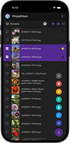

Release Notes¶
You can test upcoming features and enhancements by changing the image tag from :latest to :preview and then following our update guide to download the newest image from Docker Hub and restart your instance.
Development Preview¶
Build 250816-519a6ab34
Our preview builds give you early access to additional features and enhancements that will be part of the next stable release. Learn more ›
What's new?
- AI: Added support for using alternative image classification models by @raystlin
- AI: Added support for generating captions using the Ollama API by @lastzero
- AI: Improved vision model configuration and
photoprism vision runcommand - Auth: 2FA can be activated, even if the recovery code cannot be copied
- Search: Added a reverse sort query parameter for initial testing (work in progress)
- Index: Selecting "Complete Rescan" refreshes the detected media types
- Index: Underlying errors are logged when file type detection fails
- Intel QSV:
libvpl2will be installed whenPHOTOPRISM_INITincludes "intel" - API: Corrected handling of CORS preflight requests by @techmatt101
- Config:
PHOTOPRISM_DISABLE_FRONTENDdisables the web user interface - Setup: Updated
compose.yamlconfiguration examples - Docker: Preinstalled
libmagic-mgcpackage for file type detection - Security: Updated Go to v1.24.6, which includes fixes and improvements
- Translations: Updated Spanish and Vietnamese
Missing user interface translations have been generated with the help of DeepL and Google Translate. Native speakers are welcome to help us improve them where needed.
July 7, 2025¶
Build 250707-d28b3101e
This release adds support for using Ollama models in the Vision AI service, improves search performance, and introduces an "Adjust Location" dialog for setting photo coordinates on a map. Users can now delete albums from the toolbar and customize the language of location details. Video and metadata handling have been refined, with updates to transcoding, scanner detection, and CLI tools. A fix for SQLite index updates is also included. Batch editing features are in final development and will be available in an upcoming release. As always, a big thank you to everyone who contributed and helped with testing!
What's new?
- AI: Added Ollama model and data URL support to the Vision Service by @sgflt
- UX: Added "Adjust Location" dialog to set coordinates on a map by @omerdduran
- UX: Added "Delete Album" action to the album toolbar menu by @omerdduran
- UX: Optimized thumbnail rendering performance in result views by @lastzero
- Places: Added a config option to set the language of location details
- Viewer: Fixed timezone handling in the information sidebar by @omerdduran
- Viewer: Seeking disables looping when playing a short video
- Videos: Added config options for transcoding preset, quality, and device
- Videos: Fixed playback when using QSV to transcode HEVC files
- Videos: Short videos up to 3 seconds are no longer classified as Live Photos
- Motion Photos: Fixed playback of videos embedded in Samsung HEIF files
- Metadata: Updated list of unwanted descriptions by @srett
- Metadata: Improved scanner detection based on device make and model
- Metadata: Fixed an issue that prevented changing the day to "Unknown" in February
- Labels: Updated Animal and Snow label category assignments
- Upload: Improved token used to distinguish simultaneous uploads by @raxod502
- CLI: Added
photoprism dlcommand to import media from a URL - CLI: Fixed an error in the backup command when a custom filename is specified
- API: Added a Content-Type header to the metrics endpoint by @brandon1024
- API: Authorized clients are allowed to create album share links
- SQLite: Fixed "'too many SQL variables'" error on index updates by @keif888
- Security: Updated Go to v1.24.4, which includes fixes and improvements
- Translations: Updated Arabic, French, German, and Japanese
Missing user interface translations have been generated with the help of DeepL and Google Translate. Native speakers are welcome to help us improve them where needed.
April 26, 2025¶
Build 250426-27ec7a128
This update adds preinstalled Linux Video Acceleration API (VAAPI) drivers and fixes the package names in the Intel QSV hardware driver installation script. 🔧
We have also fixed the .deb and .rpm installation package builds as an alternative to the plain .tar.gz packages attached to this release. Note that these are intended for experienced users and third-party integration maintainers only, as they require manual configuration and do not include tested system dependencies. Since we are unable to provide support for custom installations, we recommend using one of our Docker images to run PhotoPrism on a private server or NAS device. 📦
What's new?
- Videos: Fixed hardware driver installation for Intel QSV
- Setup: Fixed .deb and .rpm installation package builds
April 25, 2025¶
Build 250425-21ddba459
This release includes a long list of enhancements and new features, many of them contributed by our community. Most notably, performance has been significantly improved in many areas, we have added a collapsible info sidebar to the fullscreen viewer, it is possible to choose a specific picture as album cover, and you can configure computer vision tasks like image classification to use an external service for scalability and customization. A big THANK YOU to everyone who submitted pull requests, improved translations, or helped with testing!
Important Changes
- To take advantage of the performance improvements in TensorFlow 2, users of our Docker images can set the
PHOTOPRISM_INITvariable to"tensorflow". This will automatically detect, download, and install a version of TensorFlow optimized for your CPU. - If you are using one of our manual installation packages, you can find libtensorflow binaries optimized for AMD64 and ARM64 CPUs on our download server. Updated libheif binaries for HEIC/HEIF image support are also available.
- A 32-bit version for Raspberry Pis with an ARMv7 CPU is no longer part of our regular releases, as TensorFlow 2 does not run on them. We have therefore created an ARMv7 architecture branch with an irregular release schedule and welcome contributions.
What's new?
- AI: Upgraded Google TensorFlow from v1.15.2 to v2.18.0 by @raystlin
- AI: Vision API allows remote use of other instances and models
- UX: Reduced frontend bundle size by 54% for faster loading by @AsikNasik
- UX: Asynchronous updates improve backend responsiveness by @tschechniker
- UX: Arrow keys can be used to navigate in the Edit dialog by @tomplast
- UX: Added additional keyboard shortcuts with usage hints in action menus
- UX: Improved focus management for more reliable keyboard event handling
- UX: Disabled animation when refreshing search results to prevent flickering
- UX: User interface language can be changed on the login page
- UX: Fixed incorrect spelling in log messages by @yarikoptic
- People: Improved performance and strategy for manual tagging by @theshadow27
- Search: Find pictures with specific or no terms in Title and Caption
- Search: Result views are reset when there are no matches or an error occurs
- Viewer: Added a collapsible sidebar for displaying metadata by @omerdduran
- Viewer: Added a new menu control in the top bar for additional actions
- Viewer: Added "Set as Album Cover" and Archive/Restore actions to the menu
- Viewer: Fixed opening pictures from randomly sorted search results
- Viewer: Optimized thumbnail size selection for high aspect ratios
- Videos: Transcoding creates fragmented MP4s optimized for streaming
- Videos: Fixed Intel Quick Sync Video (QSV) hardware transcoding by @hicasper
- Videos: Improved transcoding and indexing logs by @Akashic101
- Places: Improved styles, colors, and mountain shading of the default world map
- Upload: Added support for uploading multiple pictures as a zip archive
- Upload: File extensions and total size of Web uploads can be restricted
- Import: Hidden
.keepand.gitkeepfiles are preserved by @zhzy0077 - WebDAV: Added
Depthheader to improve service discovery by @esteve - Config: Passwords and secrets can be read from files by @petertrr
- Setup: Improved inline documentation in compose.yaml examples
- Docker: Upgraded Ubuntu 25.04 (Plucky Puffin) base image includes FFmpeg v7.1.1, Darktable v5.0.1, RawTherapee v5.11, ExifTool v13.10, and libheif v1.19.7
- Security: Go has been updated to v1.24.2, which includes fixes and improvements
- Translations: Updated Arabic, French, and German
March 21, 2025¶
Build 250321-57590c48b
This release includes some major usability enhancements, PDF file format support, the latest translations contributed by our community, and fixes for recently discovered issues. With the UI update now largely complete, we know that many users will be excited to hear that after this release, our development focus will shift to batch editing, as well as improved multi-user and AI capabilities. We've been very much looking forward to this, and it's a great feeling to finally get started! 🤖
What's new?
- UX: Search toolbars and tabs remain visible while scrolling
- UX: Users can choose their Start Page and Time Zone in Settings
- UX: Disk usage can be limited and displayed in sidebar navigation
- UX: Metadata displayed in the Cards View can be configured
- UX: Improved List View layout for easier selection
- Index: Added file format support for Adobe PDF documents
- Albums: Added file name and file type settings for zip downloads
- Albums: Added default sort order settings for each album type
- Videos: Added codec search filter and Nvidia GPU detection
- Labels: Fixed searching for labels that consist only of emojis
- Upload: Fixed an issue that could cause the same album to be created multiple times
- WebDAV: File downloads are flagged as failed when retry limit is reached
- MariaDB: Added version check to determine zero-configuration SSL support
- Translations: Updated Chinese (Simplified), French, German, Turkish, and Ukrainian
- Security: Go has been updated to v1.24.1, which includes fixes and improvements
February 28, 2025¶
Build 250228-43447fa38
With this update, you'll get additional usability and performance improvements, as well as a new thumbnail size for Retina 5K displays that bridges the gap between 4K and 8K. We would also like to take this opportunity to thank our community, whose support has been and continues to be essential to the success of the project! 🌈💎✨
What's new?
- UX: Added menu action button for archiving pictures from albums
- UX: Upload to WebDAV menu action only appears if sharing is enabled
- Viewer: Content preloading is less eager to reduce server load
- Viewer: Fullscreen toggle is always visible in experimental mode
- Viewer: Added a new thumbnail size suitable for Retina 5K displays
- Videos: M4V container files are assumed to be MP4 compatible
- Places: Browser scrollbar stays hidden when cluster view is open
February 24, 2025¶
Build 250224-834c16bc7
This service release changes the default thumbnail size in the Photo/Video Viewer to improve loading and swiping performance, especially on mobile Retina displays. It also includes updated translations and dependencies.
What's new?
February 23, 2025¶
Build 250223-b79d21907
This major new release features an updated user interface with many usability enhancements and new features, such as a hybrid photo and video viewer that replaces the dedicated video player, a redesigned edit dialog that is more responsive and easier to use, and an immersive 3D Earth view in Places. It also includes dozens of layout optimizations for right-to-left languages.
It's been a long road to get here, as we've put a lot of effort into quality and detail, and welcomed new team members along the way. So thank you for your patience while we got this ready for you, and we hope you enjoy the new look and features as much as we do! 👨🚀🚀✨
Breaking Changes
- It is recommended that you perform a complete rescan of your library after upgrading, as otherwise videos that do not require transcoding may be transcoded during playback due to missing metadata, resulting in high CPU and disk usage. Learn more ›
What's new?
- UX: Updated user interface with many new features and enhancements
- UX: Edit dialog has been redesigned to be more mobile and user-friendly
- UX: New hybrid photo and video viewer replaces dedicated video player
- Viewer: Higher resolution thumbnails are used when zooming into an image
- Viewer: Videos are played automatically when a slideshow is running
- Search: Cards view and mosaic view show the video duration on thumbnails
- Search: Cards view always shows the filename and camera details for videos
- Places: Added a 3D Earth view mode that can be enabled for any map
- Places: Upgraded MapLibre GL JS library from v3.6 to v5.1 by @QyuBee
- Places: Locations are no longer estimated for non-photographic pictures
- Places: Updated reverse geocoding data to include corrections from OSM
- Metadata: Labels are set based on matching keywords in title, subject and caption
- Metadata: Improved recognition of images created by digital film scanners
- Metadata: Numerals are preserved in titles generated from file and folder names
- Import: Advanced users can configure a custom destination file path pattern
- Settings: Fixed Windows resource string in WebDAV dialog when using HTTPS
- API:
Descriptionfield has been renamed toCaptionin/photosendpoints - CLI: Added a
userscommand flag to find and restore deleted user accounts - Setup: Renamed
docker-compose.ymlconfig examples tocompose.yaml - Config: Added options to recreate Unix server socket and set permissions
- Docker: Replaced entrypoint script for graceful server shutdown and restart
- Docker: Base image has been upgraded from Ubuntu 24.04 to 24.10 (Oracular Oriole)
- Docker: NAS devices running a very old Linux kernel can use the
:legacyimage - Security: Added
X-Robots-Tagheader androbots.txtfile to control crawlers - Security: Go has been upgraded to v1.24, which includes fixes and improvements
September 15, 2024¶
Build 240915-e1280b2fb
This update includes improved HEIC file support for iOS 18 compatibility, updated dependencies and translations, UX enhancements, and fixes for recently discovered issues. Please note that a complete re-scan of your library is required to increase the GPS location accuracy of pictures, e.g. under Places. A big thank you to everyone who contributed and helped with testing! 🛰🌎
What's new?
- HEIC: Improved
.heicimage file support for compatibility with iOS 18 - Search: Sidecar files are no longer shown in the results when sorting by file size
- Archive: Recently archived pictures are displayed first by default
- Places: Fixed an issue where no pictures were found when clicking on clusters
- Library: Removed the archive button from the action menu under Library > Hidden
- API: Fixed an issue where update requests could fail silently in case of database errors
- API: Added interactive Swagger developer documentation with examples
- Security: Go has been updated to v1.22.7, which includes security and bug fixes
- Translations: Added Irish (Gaeilge) and updated Basque, French and German
July 11, 2024¶
Build 240711-2197af848
Our latest update adds support for single sign-on via OpenID Connect (OIDC). We would like to thank everyone who contributed to this, especially Timo Volkmann, who got things rolling and did much of the necessary work! 🌈
What's new?
- Auth: Added support for single sign-on via OpenID Connect (OIDC)
- Index: Slashes and null bytes are trimmed from
.ppignorepatterns - Videos: Added support for MPEG-5 Essential Video Coding (EVC)
- Videos: Added filter to transcode 10bit videos with Intel QSV
- CLI: Local passwords can be removed with
photoprism passwd --rm - Security: Go has been updated to the latest stable release v1.22.5
- Translations: Updated French and Japanese
May 31, 2024¶
Build 240531-60b3a4628
With this update, you can choose to install FFmpeg 7 for faster software video transcoding. You also get the latest translations contributed by our community as well as improved backup commands and configuration defaults.
What's new?
- Videos: You can choose to install FFmpeg 7.0 for faster transcoding
- MariaDB: Backup and restore commands support socket connections
- Config: Increased auto-index delay and disabled auto-import by default
- Translations: Updated Japanese
May 28, 2024¶
Build 240528-977d6c0de
This service release reduces the server load when downloading many files, expands the list of available config options, and gets you the latest translations contributed by our community.
What's new?
- Download: Zip archives are not compressed to reduce server load
- Search: Added
added,updatedandeditedsearch filters for app developers - Config: Replaced the terms whitelist and blacklist with alternatives
- Config: New feature flag
PHOTOPRISM_DISABLE_BACKUPSdisables all backups - Config: New feature flag
PHOTOPRISM_DISABLE_VIPSdisables the use of libvips - Config: Due to compatibility issues, libvips is disabled on 32-bit operating systems
- Setup: Improved .deb packages for installation on Ubuntu/Debian Linux
- Setup: Improved AUR packages for installation on Arch Linux (Thomas Eizinger)
- Translations: Updated French and German
May 23, 2024¶
Build 240523-923ee0cf7
This update adds a scheduler so you can easily create database backups and re-index your library at regular intervals. It also includes many updated dependencies and support for ICC color profiles, which especially benefits Apple iPhone and professional users working with color spaces other than sRGB. 🎨
Important Changes
- If you keep the default settings, daily database backups will be automatically created, with up to 3 backup files being retained. This is to prevent the available storage space from filling up. We recommend setting the corresponding config options before installing the update if you want to disable scheduled backups, keep more backup files, or prefer a specific time for creating backups. The previously available
--disable-backupsflag has been deprecated in favor of these finer-grained options. - In order to preserve ICC color profiles and reduce memory usage, new thumbnails will be generated with the
libvipsimage processing library. You can run thephotoprism thumbs -fcommand in a terminal to regenerate your existing thumbs as needed, or delete thestorage/cache/thumbnailsfolder and then re-index your library. To continue using the native image processing library, setPHOTOPRISM_THUMB_LIBRARYto"imaging"in yourcompose.yamlordocker-compose.ymlconfiguration file. If you build from source or use one of our binary installation packages, the system on which you build and/or run PhotoPrism must havelibvips>= 8.10 installed.
What's new?
- Colors: Added libvips support to preserve ICC profiles in thumbnails
- Search: Clicking on a timestamp finds pictures taken on the same day
- Search: Added a sort option to order search results by picture title
- Review: Photos are automatically approved when adding them to an album
- People: Faces tagged on private or archived pictures will be ignored
- Index:
*.thmthumbnail files are not used as primary image anymore - Index: Added a config option for scheduling automatic library rescans
- Index: Improved recovery of metadata from sidecar YAML files
- Upload: Improved ETA display when using the web upload dialog
- Backups: Added config options for creating backups at regular intervals
- Moments: Background worker no longer creates backups to avoid disk activity
- Docker: Upgraded base image from Ubuntu 23.10 to Ubuntu 24.04 LTS
- Security: Go has been updated to the latest stable release v1.22.3
- Translations: Updated Chinese (traditional), Danish, French, and German
April 20, 2024¶
Build 240420-ef5f14bc4
Our new stable release comes with a long list of indexing and security-related improvements. Most notably, we've added support for 2-Factor Authentication (2FA) to protect your account in case someone gains access to your password. As all security-related changes had to be thoroughly tested, this is one of the updates that were longer in the making. We appreciate your patience while we've been working on this and would like to thank everyone involved! 🔐
What's new?
- Account: Added support for 2-Factor Authentication (2FA)
- Account: Added dialog to manage App Passwords from the UI
- Places: Updated reverse geocoding data and standard map tiles
- Albums: Fixed links to albums in the settings tab of the edit dialog
- Photos: Non-JPEG files like HEIC are no longer flagged as stacks in the UI
- Videos: Improved Intel QSV hardware transcoding support and performance
- Videos: Added support for Material Exchange Format (MXF) files
- UI/UX: Improved visibility of buttons and toggles in search results
- Index: A warning is shown for files with an invalid filename extension
- Index: Nested storage folders within the originals path are ignored
- Import: Modification times are preserved when moving or copying files
- Metadata: Media files with a matching
ContentIdentifiercan be stacked - Metadata: File mod time instead of birth time is used as creation time fallback
- Metadata: Improved validation for focal length, f-number, and exposure values
- Metadata: Stop words are no longer ignored when generating titles from filenames
- WebDAV: File modification date is preserved if client submits an
X-OC-MTimeheader - API: Added support for OAuth2 Client Credentials and Access Tokens
- API: Added Prometheus-compatible metrics and monitoring endpoint
- CDN: Improved Cross-Origin Resource Sharing (CORS) and cache headers
- MariaDB: Info log is shown when waiting for the database to become available
- MariaDB: Changed image name in Docker Compose config example for ARMv7
- Docker: Missing user accounts are automatically created by the entrypoint script
- Setup: Added ARMv7
tar.gzpackages for installation without Docker - Performance: Added index for
files.file_errorto reduce query time - Security: Go has been updated to the latest stable release v1.22.2
November 28, 2023¶
Build 231128-f48ff16ef
Our latest service release provides updated dependencies and fixes for recently discovered issues. In addition, official installation packages with binaries for Linux are now available as an alternative to our Docker images. Please note that only experienced users should choose this installation method, since these do not include all dependencies and need to be set up manually.
What's new?
- Search: Improved camera and lens information in the cards view details
- Search: Fixed cards view rendering when a lens has no model description
- Search: Added filter to find pictures by resolution range in Megapixels (MP)
- PWA: Fixed list of available icon sizes in the app manifest file
- JPEG: Fixed regression when handling image files with EOF error
- JPEG: Fixed indexing of image files with invalid color metadata
- JPEG/PNG: Added panic handler for unexpected thumbnail save errors
- HEIC: Libheif has been upgraded from version 1.13.0 to 1.17.1
- RAW: Darktable has been upgraded from version 4.2.1 to 4.4.2
- Videos: Improved performance when extracting still images for creating thumbnails
- Vectors: Improved SVG conversion using RSVG instead of ImageMagick
- Docker: Base image has been upgraded from Ubuntu 23.04 to 23.10 (Mantic Minotaur)
- Setup: Added
tar.gz,debandrpmpackages for installation without Docker - Security: Go has been updated to the latest stable release v1.21.4
October 21, 2023¶
Build 231021-9abea5b55
This update adds search filters for finding pictures by ISO number, focal length, aperture, and altitude. It also includes a number of user interface improvements, updated translations, as well as fixes for recently discovered issues. We would like to thank everyone who submitted pull requests, helped with testing, or contributed in other ways! ✨
What's new?
- Search: Added filters for ISO number, focal length, and aperture range
- Search: Added
alt:...filter to find pictures by altitude range - Search: Cards view shows ISO number, focal length, aperture, and exposure
- Live Photos: Fixed Google HEVC motion photo playback and transcoding
- Live Photos: Improved indexing of related files with vendor-specific naming schemes
- Metadata: Updated offline map data for more accurate timezone lookups
- Metadata: Creation time is calculated with UTC offset if timezone is unknown
- Config: Creation of default certificate is skipped if HTTPS/TLS is disabled
- Translations: Updated German, Greek, and Romanian
October 11, 2023¶
Build 231011-63f708417
This service release includes an updated ARMv7 build, a number of usability improvements requested by our community, and fixes for recently discovered issues. We would like to thank everyone involved!
What's new?
- PWA: Fixed automatic screen orientation in Google Chrome on Android
- Upload: Current album is preselected when using the mobile nav menu
- Videos: Creation of thumbnails can only be disabled in experimental mode
- Settings: Ability to permanently delete files is now enabled by default
- RAW/HEIC: Original media information is shown in the cards view details
- Live Photos: Embedded video files can be streamed and transcoded
- Metadata: Improved camera make and model name normalization
- Docker: An updated ARMv7 image is available on Docker Hub
- Security: Go has been updated to the latest stable release v1.21.3
September 23, 2023¶
Build 230923-e59851350
Our latest release includes a redesigned Places view, with the search box moved to the top and a preview for selected clusters at the bottom. We've also added support for Samsung/Google Motion Photos, so you can view them like Apple Live Photos after re-indexing your library. Beyond those highlights, you'll get many usability improvements, new search filters, and fixes for recently discovered issues. A big thank you to everyone who contributed!
{kind=link}
What's new?
- UX: Added a preview image to the Labels tab in the photo edit dialog
- UX: Reduced padding in mosaic view in favor of larger thumbnails
- UX: Edit dialog allows pasting latitude and longitude in a single operation
- UX: Reduced the number of info notifications in the user interface
- UX: Improved user interface styles, added new "Chrome" and "Mint" themes
- Search: Added
scan:falsefilter to find photos that are not scans - Search: Added
favorite:falsefilter to find pictures not marked as favorites - Albums: New share preview shows album contents as a stack of Polaroids
- Albums: Fixed preview image URL when sharing album links
- Albums: Current album is preselected when opening the upload dialog
- Albums: Last edited timestamp is updated when pictures are added
- People: Fixed an error when reusing the name of a previously deleted person
- Places: Added cluster view to browse pictures close to each other in an overlay
- Places: Added support sub-km distances when searching for locations
- Places: Added support for the
labelandcategorysearch filters - Places: Added map style selector and a scale for comparing distances
- Archive: Added "Delete All" button to permanently delete all archived files
- Library: Added option for admins to perform index and cache cleanup from the UI
- Library: Fixed escaping of hash characters in folder names
- Live Photos: Added support for Samsung Motion Photos
- Live Photos: Added support for Google Camera Motion Photos
- Live Photos: Fixed indexing of sidecar video file properties
- Videos: Added support for AMD GPUs in
install-gpu.shscript - Videos: Removed deprecated FFmpeg
-vsync vfrcommand flag - Metadata: Changed order of field names from which the title is extracted
- Metadata: Added support for reading fstop favorite flag from XMP sidecar files
- Metadata: Samsung/Google Motion Photos are flagged as Live Photos
- Config: Added support for serving HTTP requests over Unix sockets
- Config: A lower cache duration can be set for video content
- SQLite: Updates are performed in batches to limit the number of variables
- Docker: Added support for user ID ranges 1201-1250 and 2000-2100
- Security: Reduced bcrypt cost for faster login on small devices
- Security: Go has been updated to the latest stable release v1.21.1
- Translations: Updated Chinese (Simplified and Traditional)
July 19, 2023¶
Build 230719-73fa7bbe8
Our latest release includes new features and enhancements contributed by our community, a number of security improvements, as well as fixes for recently discovered issues. Thank you to everyone who submitted pull requests, helped with testing, signed up as a member, or contributed in other ways! We appreciate it very much.
What's new?
- Setup: Added a batch script for simplified installation under Windows
- Search: Added
geo:falsefilter to find pictures without GPS coordinates - Photos: JPEG files with missing EOI marker are automatically repaired
- Photos: Fixed an error when opening panoramas taken with a Samsung S21
- Videos: Added a config option to limit the resolution of transcoded videos
- Videos: Fixed container and codec checks in
photoprism convertcommand - Metadata: Dates in WhatsApp generated file names can be parsed
- Metadata: Year 0000 is mapped to 0001 when parsing dates from Exiftool
- Security: Default to a self-signed HTTPS/TLS certificate if no other certificate is available
- Security: Clipboard contents are cleared on logout and when user privileges change
- Security: Go has been updated to v1.20.6, which includes bug fixes and enhancements
- Translations: Updated Japanese
We recommend that you explicitly disable TLS by adding PHOTOPRISM_DISABLE_TLS: "true" to your compose.yaml or docker-compose.yml file when running PhotoPrism behind a reverse proxy. HTTPS could otherwise be accidentally enabled if a certificate matching the site URL is found or PHOTOPRISM_DEFAULT_TLS is set to "true".
June 25, 2023¶
Build 230625-17242fb07
This service release includes the latest translations contributed by our community, as well as fixes for recently discovered issues.
What's new?
- Albums: Invalid entries are automatically hidden and flagged as missing
- CLI: Fixed an issue where entering a very long password could disable the login
- Security: Updated third-party dependencies in backend and frontend
- Translations: Updated Chinese (Simplified), Italian, and Japanese
June 15, 2023¶
Build 230615-90a18f6e7
This update includes new features and enhancements contributed by our community, as well as fixes for recently discovered issues. We would like to thank everyone involved!
What's new?
- Photos: Related albums are displayed in the Info tab of the edit dialog
- Photos: Added a link from the Files tab to the related folder in the file browser
- Moments: Added labels to match Holidays as well as additional Pets
- CLI: Added
photoprism findcommand to search the index for specific files - CLI: Fixed the
photoprism importcommand destination parameter type - PikaPods: Fixed an issue that caused newly deployed instances to require a restart
- Security: Updated third-party dependencies in backend and frontend
June 7, 2023¶
Build 230607-9e086c7eb
With this much anticipated update, our new high-resolution vector world map becomes available to all users. It also features a special terrain mode for mountain lovers, so you can view the "Satellite", "Outdoor" and "Topography" maps in 3D!
What's new?
- Places: Improved the level of detail of the freely available default world map
- Places: Added terrain mode to display the satellite, outdoor and topography maps in 3D
- Security: Go has been updated to v1.20.5, which includes bug fixes and enhancements
- Translations: Updated Chinese (Simplified), Italian, and Slovak
PhotoPrism® Plus
June 3, 2023¶
Build 230603-378d4746a
This service release fixes recently discovered issues and improves compatibility with the upcoming MariaDB v11.0. If you are upgrading from MariaDB 10.x to 11.0, please make sure that you replace command: mysqld with command: (followed by the command flags) in your compose.yaml or docker-compose.yml file, otherwise the database server might fail to start. Thank you to everyone who contributed with pull requests, reported bugs, and helped us test the changes!
What's new?
- Folders: Searching for substrings now returns all matching albums
- Search: Fixed an issue where the "Unknown country" filter has been ignored
- Navigation: Fixed account feature check when clicking on the profile picture
- Config: Fixed setting the title of the search page based on the site title
- MariaDB: Improved compatibility with the upcoming release 11.0
- Security: Updated third-party dependencies in backend and frontend
- Security: Go has been updated to v1.20.4, which includes bug fixes and enhancements
- Translations: Updated Chinese (Traditional), Dutch, German, and French
PhotoPrism® Plus
May 13, 2023¶
Build 230513-0b780defb
As promised, this update makes hardware transcoding and many other config options available to all users. A big thank you to all of our contributors, members, and sponsors, whose generous support has been and continues to be essential to the success of the project!
What's new?
May 6, 2023¶
Build 230506-9de9a3540
This update resolves two recently reported issues and includes updated translations.
What's new?
- Sharing: Upload checks if files have been deleted
- CLI: Logging output is reduced in production mode
- Translations: Updated French
May 4, 2023¶
Build 230504-cbf48798c
This service release makes the Nordic theme and the Hide People feature available to all users. It also changes the theme order in Settings so that the freely available themes come first.
What's new?
May 2, 2023¶
Build 230502-c405f6eff
With this major new release, you'll get a long list of new features and enhancements with a focus on performance, security, and file type support. In addition, our Plus Members can now register directly in the app to unlock additional features like vector graphics support and a new admin web UI for user and session management. Thank you to all contributors, members, and sponsors who made this possible!
What's new?
- UX: Improved user interface layout for right-to-left languages
- UX: Improved highlight and background colors in the cards view
- UX: Improved theme styles and search field contrast in Places
- UX: Navigation shows the total number of pictures without those under review
- UX: Enabled long-touch menu in photo viewer on iOS Safari
- PWA: Increased allowed length of app name on home screen
- PWA: Improved manifest.json for more reliable installation prompts
- Themes: Added "Carbon", "Neon", and "Nordic" based on colors from nordtheme.com
- Themes: Removed "Electra", "Moonlight", "Seaweed", and "Cyano"
- People: Ambiguous faces are skipped when matching to improve performance
- People: Entering names is faster with many faces tagged
- Search: Added
id:...filter to find pictures by Exif UID, XMP Document ID or Instance ID - Search: Increased batch size for better performance when loading results
- Search: Deleted albums are ignored when using the
unsortedfilter - Search: Sepia colored pictures are excluded when using the
monofilter - Photos: Image orientation can be changed through the user interface
- RAW: Upgraded RawTherapee from v5.8 to v.5.9 to fix ProRAW support
- Videos: Improved player compatibility with browser plugins
- Videos: Improved preview image generation depending on duration
- Videos: Playback durations of less than one second can be indexed and displayed
- Videos: Added .dv to the list of known video file types
- Videos: Specific video and audio streams can be selected for transcoding
- Videos: Improved detection of HEVC support for Google Chrome
- Albums: Added extended search form with sorting options
- Albums: Fixed form field styles in the share dialog
- Albums: Double quotes in album names are replaced by Unicode characters
- Albums: Improved error handling and validation of query parameters
- Albums: "Download as zip" button is displayed on mobile screens
- Moments: Changed default sort order in the overview to "newest"
- Folders: Search is case-insensitive and uses wildcards for improved usability
- Metadata: GPS coordinates are normalized to be within a common range
- Metadata: Out-of-range altitude values are ignored to prevent indexing errors
- Metadata: Date defaults caused by software or camera bugs are ignored
- Metadata: Software name is displayed on the Files tab, if available
- Metadata: Valid year range in Exif data and filenames has been extended from 1990 to 1970
- Metadata: Scanned images are automatically recognized by device name
- Metadata: Added TakenAtLocal to YAML backups to prevent incorrectly restored times
- Metadata: Notes can be extracted from the Comment and UserComment fields
- Index: Improved performance by skipping updates when there are no changes
- Index: Improved performance when flagging hidden files
- Index: Added file format support for Adobe Photoshop PSD images
- Index: Added support for decoding JPEG XL and playing PNG animations
- Index: Corrupted JPEG images are automatically repaired if necessary
- Index: TIFF images with unsupported file format features can be converted
- Upload: Estimated time remaining is displayed in minutes and seconds
- Download: Added settings to choose which files to download by default
- Backups: Improved backup and restore commands to better handle large index dumps
- WebDAV: Enabled access to the originals and import folders in read-only mode
- WebDAV: Replaced client library to prevent incomplete uploads to other servers
- WebDAV: Download sync is prevented when read-only mode is enabled
- API: Search results can be sorted randomly to get a random set of pictures
- API: HEAD requests are now supported for frontend bootstrap paths
- CLI: Added file extension flag to the
photoprism convertcommand - CLI: Commands create thumbnails and convert files in deterministic order
- Config: Migrations are skipped if the same version has already been initialized
- Config: Use dynamic social preview image based on app name
- Config: Custom template path is not searched for files if not specified
- Config: Advanced settings include additional options for PNGs and vector graphics
- Config: Added advanced HTTP cache control options
- Config: Added option to stream videos over a Content Delivery Network (CDN)
- Docker: Ubuntu base image has been upgraded from v22.04 to v23.04
- Docker: MariaDB image and binaries have been upgraded from v10.9 to v10.11
- Podman: Added config examples for users of Red Hat-based Linux distributions
- Security: Improved bcrypt password support with explicit 72-character limit
- Security: Go has been updated to v1.20.3, which includes bug fixes and other improvements
- Translations: Added Afrikaans (South Africa) and Basque (Euskara)
- Translations: Updated Arabic, Bulgarian, Chinese, Czech, Dutch, Estonian, French, German, Italian, Malay, Russian, Ukrainian and many others
PhotoPrism® Plus
- Auth: Admins can manage user accounts and active sessions through the web UI
- Index: Added file format support for SVG, AI, PS and EPS vector graphics
Our new Plus License is used for both the extensions we provide to our members and the standard Docker images available on Docker Hub. This allows us to bundle the extensions with the compiled application, while the Community Edition remains freely available under the terms of the GNU Affero General Public License (AGPL).
If you don't plan to use any additional features, you can alternatively use the "ce" tag instead of "latest" to get a slightly smaller Docker image distributed under the AGPL. Note that system dependencies and other third-party components included in this image are still subject to additional terms and conditions.
November 18, 2022¶
Build 221118-e58fee0fb
This service release includes compatibility fixes for MariaDB 10.10, the latest translations, a new theme, and updated dependencies.
We recommend not using the :latest tag for the MariaDB Docker image and to upgrade manually by changing the tag once we had a chance to test a new major version.
What's new?
- UI: Added "Electra" theme
- MariaDB: Compatibility fixes for version 10.10
- Translations: Updated Czech and Estonian
November 17, 2022¶
Build 221117-3268c4de8
This update includes video transcoding improvements and the latest translations contributed by our community.
What's new?
- Videos: Fixed installation of Intel Quick Sync drivers for hardware transcoding
- Videos: Added
.m2tsto known file extensions - Translations: Updated Chinese (Traditional) and Estonian
November 16, 2022¶
Build 221116-122ebfb70
With this update you get the latest translations, updated dependencies, and two metadata bug fixes. Thanks to all who contributed!
What's new?
- Metadata: Bad Unicode strings are sanitized automatically
- Metadata: UTC can be overridden by local time with unknown zone
- MariaDB: Unsupported versions are allowed in "unsafe" mode
- Translations: Added Estonian
- Translations: Updated Polish, Italian, Korean, Romanian, and Chinese (Traditional)
November 5, 2022¶
Build 221105-7a295cab4
This service release provides UX improvements for the photo editing dialog and includes the latest translations contributed by our community. Note that our guides now use the new docker compose command by default. If your server does not yet support it, you can still use docker-compose to start and stop your instance.
What's new?
- UX: Improved layout of form fields in photo edit dialog
- Account: Disabled "gender" dropdown when busy or in demo mode
- Docker: Changed "docker-compose" command to "docker compose"
- Translations: Updated Estonian, Hungarian, and Russian
November 4, 2022¶
Build 221104-20d180b21
A small update featuring improved NVIDIA GPU support, the latest translations contributed by our community, and updated dependencies.
What's new?
- NVIDIA: Added a ready-to-use
docker-compose.ymlconfig example - NVIDIA: Updated FFmpeg parameters for hardware video transcoding
- NVIDIA: Updated install-gpu.sh script and related documentation
- Translations: Updated Chinese
November 3, 2022¶
Build 221103-211eb36ea
With this update you'll get the latest translations contributed by our community, updated dependencies as well as a few minor bug fixes and improvements.
What's new?
- Index: Paths starting with
_.and__like__MACOSXare ignored - Config: Updated new trusted proxy header options and command help
- MariaDB: Improved server version check on startup
- Security: Go has been updated to v1.19.3, which includes security fixes
- Translations: Updated Chinese, French, Norwegian Bokmål, and Romanian
November 2, 2022¶
Build 221102-905925b4d
Due to the many new features, enhancements and bug fixes, this is one of those updates that took longer to release. Before upgrading, please read the full release notes and note that this release does not yet include support for user roles other than Admin, as we need to specify, create and test each new role before we can release it. Once this is done, we will also provide additional user management documentation.
We've generated missing translations with the help of DeepL and Google Translate. Native speakers are invited to help us improve those if needed. A special thank you to everyone who contributed!
Breaking Changes
- In order to improve security and compatibility, the default Docker image is now based on Ubuntu 22.04 LTS (Jammy Jellyfish) instead of Debian 12 (Bookworm). The entrypoint script has been updated to preserve group permissions required for hardware transcoding.
- Session and user management have been re-implemented. If you are upgrading from a preview build, you will need to run the
photoprism users reset --yescommand in a terminal after the upgrade to recreate the new database tables so that they are compatible with the stable version. This will not affect your pictures or albums. - Upgrading from the last stable version should work without any problems. However, if you have already created additional accounts with the previously offered unofficial multi-user support, you will notice that only the main admin account is migrated automatically. Run
photoprism users legacyin a terminal to display the legacy accounts so you can migrate them manually if needed. - Sharing link visitors can now see the picture locations in the regular album view and optionally on a map after clicking the link. Based on user feedback, we may add settings to hide the locations for enhanced privacy.
- We recommend performing a full rescan after the upgrade to take advantage of new search filters and sort options.
- Indexing is also necessary to find and view HEIC, DNG, and AVIF images that were previously unsupported or had errors. In some cases with incorrectly converted images, it may be necessary to recreate the JPEG sidecar files by running the
photoprism convert -fcommand in a terminal before starting the rescan. To regenerate your thumbnails, runphotoprism thumbs -f.
What's new?
- Auth: Session and user management have been re-implemented
- Auth: API has been improved to prevent unnecessary re-logins
- Auth: User interface routes have been prefixed with
/library - UX: Scroll position is restored again when navigating back
- UX: Loading screen and mobile toolbar menu have been redesigned
- UX: Improved user interface styles for RTL languages
- Search: Added
city:...andstate:...to filter by location details - Search: Results can now also be sorted by "File Size" and "Video Duration"
- Albums: Added breadcrumbs to navigate back on large screens
- Albums: Deselected labels are ignored when adding photos by label
- HEIC: Added support for Sony's
.HIFfile extension - HEIC: Updated
heif-converttool to fix conversion problems - AVIF: Added support for the AV1 Image File Format
- RAW: Updated Darktable from v3.8.1 to v4.0.1 (AMD64 only)
- ProRAW: JPEGs embedded in
.DNGfiles can be searched and viewed - Videos: Added VAAPI hardware AVC encoder support
- Index: Delayed RAW file format check to improve indexing performance
- Import: Selection of a source folder with dots in its name is now possible
- Import: Related original names are indexed in addition to the main filename
- Settings: Services cannot be managed in public mode to increase security
- Backups: Worker no longer recreates all album YAML files on every run
- Metadata: Added more place names with known countries
- Metadata: Default to UTC when reading time from XMP file
- Config: Increased default resolution limit from 100 to 150 MP
- Config:
imprintinfo text option has been renamed tolegal-info - SQLite: Added busy timeout preset to reduce locking errors when indexing
- MariaDB: Startup fails with an error message if an unsupported version is used
- Docker: Default image is based on Ubuntu 22.04 LTS (Jammy Jellyfish)
- Docker: Switched from
gosutosetprivin entrypoint.sh script - Security: New files are created without execution permission
- Security: Go has been updated to v1.19.2, which includes security fixes
- Translations: Added Persian
- Translations: Updated Chinese, Dutch, Finnish, French, German, Spanish, and many more
September 1, 2022¶
Build 220901-f493607b0
With this update you get all the latest translations contributed by our community, mobile navigation enhancements, updated dependencies and, as usual, fixes for recently discovered issues. Thanks to everyone involved!
{kind=link}
What's new?
- UX: Mobile toolbar menu has been redesigned and expanded
- UX: Improved search result and Gemstone theme styles
- Search: Known file extensions are stripped from
name:...filter string - Library: Indexing will be aborted if the originals folder is empty
- Videos: Local time is extracted from
DateTimeOriginalif possible - Albums: All pictures are shown if "Private" has been disabled in Settings
- Thumbs:
photoprism thumbscommand regenerates thumbnails of sidecar files - Docker: Permissions of original media files are no longer updated on startup
- Build: Go has been updated to v1.19, which includes fixes and enhancements
- Build: NodeJS has been updated from v16 to v18
- Translations: Added Catalan, Finnish, Ukrainian, and Slovene
July 30, 2022¶
Build 220730-0e1222c83
Fixes the activation of public mode with PHOTOPRISM_AUTH_MODE instead of PHOTOPRISM_PUBLIC.
What's new?
July 28, 2022¶
Build 220728-729ddd920
Includes indexing, metadata, and authentication enhancements, as well as updated translations.
What's new?
- Library: Added support for indexing and importing symbolically linked files
- Thumbs: Creating redundant JPEG files is skipped to save disk space
- Zip: Improved file system rights detection and temporary file handling
- Metadata: Creation time is extracted from DateTimeCreated, if available
- Metadata: Unknown values are ignored when parsing timestamps
- Purge: Fixed SQL error when the photo ID of a file is missing
- Cleanup: Improved logging when deleting related sidecar files
- Config: Added
PHOTOPRISM_AUTH_MODEoption to select authentication mode - Config: Improved inline docs in
docker-compose.ymlexamples - Build: Updated Go to v1.18.4, which includes a number of security and compiler fixes
- Translations: Added Greek
Breaking Changes
- Config:
PHOTOPRISM_AUTHhas been removed in favor ofPHOTOPRISM_AUTH_MODE - Config:
PHOTOPRISM_PUBLIChas been deprecated in favor ofPHOTOPRISM_AUTH_MODE
June 29, 2022¶
Build 220629-5d7448d2
With this update, you'll enjoy a much faster and smoother scrolling experience as well as direct streaming of OGV, VP8, VP9, AV1, WebM and HEVC videos if they do not exceed the configured bitrate limit. Special thanks to Heiko Mathes and Andre Carrera for their contributions!
- UX: Much faster and smoother scrolling experience in albums and search results
- Videos: Direct streaming of OGV, VP8, VP9, AV1, WebM, and HEVC where supported
- Videos: Fixed incorrect frame rate when using NVIDIA hardware transcoding
- Sharing: Fixed the spacing of the top navigation toolbar on small screens
- RAW: Display actual dimensions as Exif metadata can be wrong, e.g. for
.NEFfiles - WebDAV: Endpoints have been disabled in public mode as they cannot be used
- API: Maximum number of search results has been increased to 100,000 files
- CLI: Config command also lists
disable-webdavandhttp-compression - Documentation: Added notes about manual session invalidation and other known issues
- Translations: Updated Arabic, Dutch, Polish, Japanese, Chinese, French, German, and Italian
June 17, 2022¶
Build 220617-0402b8d3
This update features updated translations as well as fixes for recently discovered issues.
- Albums: A deleted album is restored when trying to add a new album with the same name
- WebDAV: Added support for auto indexing/importing in a sub-directory on a shared domain
- Translations: Updated Arabic, Czech, Korean, and Norwegian Bokmål
June 14, 2022¶
Build 220614-dea9ff68
A small but important update that includes translations to Arabic, a migration fix for MariaDB, and many updated dependencies.
- Security: Updated Go to v1.18.3, which includes TLS and validation fixes
- MariaDB: Removed migration that could corrupt photo descriptions in the index
- Translations: Added Arabic, updated Danish and Polish
May 28, 2022¶
Build 220528-efb5d710
This update includes translations that were recently contributed via translate.photoprism.app. Missing translations were added by us using DeepL and Google Translate. Native speakers are invited to help improve those if needed. Thank you very much!
- UX: Mobile toolbar menu has been redesigned and made accessible in public mode
- Themes: Gemstone and Raspberry have been updated
{kind=link}
{kind=link}
May 27, 2022¶
Build 220527-005770ca
This update improves navigation fonts and mobile submenu colors for light themes. We are also working to establish PhotoPrism+ as the name for our community membership and associated benefits. For this, membership information in the app, on our website, on GitHub Sponsors and Patreon is gradually being updated.
{kind=link}
- UX: Fixed light theme colors of mobile navigation submenu
- UX: Splash screen has been updated and no longer depends on admin theme
May 24, 2022¶
Build 220524-c76de0df
This service release fixes potential issues with our new Debian 12-based Docker image that shipped with the last update. These may have prevented users from deploying it without making changes to their environment. In our ongoing effort to improve usability and performance, we have also implemented a number of UX/UI optimizations, such as using the default operating system font instead of Google's Roboto.
- UX: Added submenu to mobile navigation toolbar
- UX: Updated splash screen information and animation
- UX: Numerous translations have been added and updated
- UX: Improved UI styles for right-to-left languages
- Auth: Short initial passwords are permitted again to avoid login problems
- Logs: Repeated log messages are omitted to prevent feedback loops
- Logs: Trace and debug messages are no longer displayed in the UI to avoid information leaks and reduce websocket communication overhead
- Search:
mono:truefilter now omits files with unknown chroma - Docker: Removed incorrect permission check for storage folder on startup
- Docker: Supported User and Group ID ranges have been documented
Thank you to everyone who helped with testing, signed up as a member, or contributed in other ways! We appreciate it very much.
May 17, 2022¶
Build 220517-b9c68f8f
This update features search UX enhancements, a new Docker base image based on Debian 12 "Bookworm", as well as fixes for recently discovered issues. Front- and backend translations in numerous languages have been added and updated. Thanks to all involved!
- File Formats: Added native support for WebP images and animated GIFs
- UX: RAW files are skipped by default when downloading photos and ZIP archives
- Auth: Passwords must have at least 8 characters to mitigate brute-force attacks
- Search: User interface and database performance optimizations
- Search: Fixed occasional lag when entering queries in the search toolbar
- Search: Improved
album:...filter supports numeric names,albums:..also AND/OR - Search: Improved
camera:...andlens:...filters accept names in addition to IDs - Search: Added
square:yesandlandscape:yesfilters - Albums: "Add to album" dialog preloads more names for auto-completion
- Albums: Album names are shortened if necessary to avoid errors when saving
- Albums: Fixed accidental creation of duplicates by pressing Enter multiple times
- People: Improved logging and fixed potential issues with matching unrecognized faces
- Places: Number of pictures rendered on the map has been limited to 500,000
- Library: Added button to clear log history under Library > Errors
- Library: RAW previews and the number of actual files are shown under Originals
- Library: Disabled hidden files warning while indexing as it can be misleading
- Index: Fixed errors when re-indexing libraries with archived photos
- Index: RAW and video conversion commands run in a virtual home directory
- Thumbnails: Reduced default JPEG quality from 92 to 85 to optimize storage and loading
- Metadata: Manual local time changes are always preserved when reindexing
- Metadata: Fixed Exif orientation flag when converting HEIF/HEIC images to JPEG
- Metadata: Fault-tolerant parsing of timestamps from Exif and JSON sidecar files
- Metadata: Improved parsing of two-digit years in original file paths
- Metadata: Exif IFD1 tags with existing IFD0 values are ignored to improve standard compliance
- Metadata: Brute-force search is skipped by default if no Exif headers were found in JPEG, PNG, TIFF, and HEIF files
- Metadata: SubSecDateTimeOriginal and SubSecCreateDate timestamps are preferred
- WebDAV: Up- and download sync can no longer be enabled at the same time to prevent unexpected behavior
- WebDAV: Added timeout/retry settings and improved handling of sync errors
- WebDAV: Fixed sharing videos and uploading automatically created albums
- CLI: Renamed
--config-fileto--defaults-yamland improved command help - CLI: Added short names for common config flags, e.g.
-ifor--wakeup-interval - CLI: Run
photoprism show tagsto display metadata tags and supported standards - CLI: Run
photoprism show formatsto display supported media and sidecar file formats - CLI: Run
photoprism show filtersto display a search filter overview with examples - Config: Improved FFmpeg parameters for Intel QSV hardware transcoding
- Config: Added NVIDIA hardware video transcoding support for members
- Config: Added
--disable-rawflag to disable indexing and conversion of RAW files - Config: Added
--resolution-limitoption to skip high-resolution images when indexing - Docker: New Debian 12 "Bookworm" base image with FFmpeg 4.4.1 and Darktable 3.8.1
- Docker: Added default users and groups for enhanced video transcoding compatibility
- Translations: Added Swedish, Romanian, Turkish, Lithuanian, Bulgarian, Malay, and Croatian
March 2, 2022¶
Build 220302-0059f429
The Docker images for this release are based on Debian 11 "Bullseye" and include many updated dependencies such as Darktable 3.8. Behind the scenes, the build process has also been improved so that it will be easier to provide standalone packages in the future.
- Auth: New login screen with more space for buttons, links, and legal information
- Metadata: Redesigned file details tab in the edit dialog
- Metadata: Support for Zulu formatted timestamps in Exiftool JSON and XMP
- Sharing: Fixed upload of complete albums via WebDAV
- Sharing: Manual WebDAV upload of video and RAW files
- iOS: Fixed multi-select via long touch in Safari PWA mode
- API: Added cache control header for faster thumbnail loading
- Config: Simplified configuration of Unix domain socket database connections
- Config: Added
--imprintand--imprint-urlto display legal information in the footer - Docker: Automatic installation of compatible CPU and GPU drivers
- Translations: Updated all front- and backend locales
You can now join us on translate.photoprism.app to help translate the UI!
January 21, 2022¶
Build 220121-2b4c8e1f
We've generated missing translations with the help of DeepL and Google Translate. Native speakers are invited to help us improve those if needed. Learn how to contribute.
- Minimum memory requirements have been reduced to 3 GB
- Photos: Fixed buttons in full screen view
- People: Fixed typo that prevented face matching optimization
- Moments: Improved update performance on MariaDB
- Translations: Pre-translated missing UI messages
January 18, 2022¶
Build 220118-76c94a1f
- Auth: Logout redirects to base URI instead of site root
- Videos: Excluded streaming from gzip compression
- Videos: Fixed Content-Type header and streaming in Safari
- Folders: Fixed search query string substitutions and sanitation
- UI: Updated information and links in Settings > About
- UI: Improved bootstrap template rendering performance
January 7, 2022¶
Build 220107-f5b7ef83
Based on our zero bug policy, this update focuses on bug fixes, security, and UX enhancements for search filters, metadata, and the indexer. In addition, one of the merged pull requests may improve face recognition performance on smaller devices and with large libraries.
- People: Improved update performance on MariaDB
- People: Improved contrast of person selection menu
- Albums: Private pictures are excluded from download as zip
- Search: Improved query parser for additional security
- Search: Added
uid:...search filter to find photos by uid - Search:
keywords:...filter does not exclude stopwords anymore - Index: Original filenames can be extracted from Exiftool JSON
- Index: More accurate and resilient handling of related files and photo stacks
- Live Photos: HEIF is used to create primary JPEG instead of a MOV still image
- Metadata: Reduced log level for missing Exif data from warn to info
- Metadata: Increased size of projection and color profile fields to 40 characters
- Backups: Improved help for config options and CLI commands
- Help: Fixed reverse proxy documentation links
- Config: Added Apple Video Toolbox hardware transcoding support for macOS
- Config: Added
/opt/photoprismto search path for asset and storage folders
December 15, 2021¶
Build 211215-93b26f19
PhotoPrism is not directly affected by the Apache Log4j vulnerability. Logs may still contain messages that can cause harm if consumed by an unpatched Java application. As a precaution, this release includes additional rules and filters to validate user input.
- Sharing: Fixed album link redirect on shared domains
- Import: More helpful warning when another import is already running
- Docker: ARMv7 image for 32-bit processors and operating systems
December 10, 2021¶
Build 211210-2cb90e7e
Starting with this release, the regular multi-arch Docker image is 64-bit only. A 32-bit version of our stable release for older devices is offered separately. This frees up development and infrastructure resources with minimal impact.
- Security: Updated Go to v1.17.5, which includes HTTP/2 and networking fixes
- People: Concurrent updates are no longer possible to prevent inconsistencies
- Places: Additional logs to detect invalid GPS coordinates in metadata
- SQLite: Reduced routine maintenance log levels and fixed migration warnings
- Thumbnails: Apple Display P3 profile support for more accurate colors
- Translations: Updated French
December 3, 2021¶
Build 211203-fdb6b5e1
Since the funding goal required to make all features and maps generally available has not been reached, early-access features have been renamed to sponsor features in this update. Offline and high-resolution street maps remain free for everyone, while hybrid, topographic, and outdoor maps are now a member feature. We believe this is fair. A big thank you to all our sponsors and contributors!
- CLI: Improved parameter and command descriptions
- CLI: Reset command optionally also deletes files in the cache folder
- Config: Improved
docker-compose.ymlexamples
November 30, 2021¶
Build 211130-13cfcf6d
- Videos: Live photos page has been added to the sub-navigation
- Albums: Manually created albums are sorted by name, with favorites first
- Places: Improved location details in border regions and near Paris
- PWA: Updated app icons, style is now also applied to the user interface
For our sponsors and contributors:
- UI: New Abyss and Gemstone dark themes 💎
November 28, 2021¶
Build 211128-7e8974fd
Official support for MySQL 8 is discontinued with this update as Oracle seems to have stopped shipping new features and enhancements. As a result, the testing effort required before each release is no longer feasible. We recommend upgrading to MariaDB 10.6 or later. PostgreSQL support is planned for 2022 without a specific release date yet.
November 27, 2021¶
Build 211127-86c43159
When possible, location estimates now include a latitude and longitude. Photos load faster when you open them in Places, and the viewer sorts them by distance. Time zone handling has been completely reworked, in particular for UTC. The Docker base image has been updated to Ubuntu 21.10, which ships with Darktable 3.6 among other updated dependencies.
- UX: Redesigned splash screen based on theme colors
- Places: Viewer loads faster and sorts photos by distance instead of date
- Places: Less frequent estimates to reduce background activity
- Places: Normalized names of states, oceans, and lakes
- Places: Updated location data from OpenStreetMap
- Places: State albums are grouped by country name
- Folders: Path names are searched in addition to titles
- People: Improved face detection performance
- People: Fixed naming faces in non-primary files
- People: Optimized matching of children's faces
- RAW: Updated Darktable to 3.6.0
- Metadata: Improved estimates and UTC time zone handling
- Metadata: Altitude is indexed even if coordinates are missing
- Auth: Usernames are not case-sensitive anymore
- CLI: Added
--forceflag tophotoprism optimizecommand - CLI: Improved parameter and command descriptions
- Config: Improved
docker-compose.ymlexamples - Translations: Added Bahasa Indonesia and Hungarian
- Translations: Updated Polish and Italian
For our sponsors and contributors:
- CLI: Run
photoprism places updateto retrieve updated location details - Config: Set
PHOTOPRISM_APP_ICONto choose an alternative PWA icon
October 18, 2021¶
Build 211018-e200f322
- UI: Updated Lavender theme
- Places: Fixed maps initialization after reload in non-public mode
- Search: Added
liveandraw:truefilters as alternative totype:… - Search: Added
faces:newalias forface:new - Config: Maximum background worker interval has been increased to 7 days
- Security: Added
Content-Security-Policyheader to prevent framing attacks - Translations: Updated Russian and Slovak
For our sponsors and contributors:
- UI: New Vanta dark theme ✨
October 10, 2021¶
Build 211010-83b4f783
- Translations: Fixed German frontend typo
- Translations: Updated all backend locales
We've generated missing translations with the help of DeepL and Google Translate. Native speakers are invited to help us improve those if needed. Learn how to contribute.
October 9, 2021¶
Build 211009-d6cc8df5`
- UX: Improved wording of search result notifications
- UX: Fixed sidebar navigation on small screens
- Users: Show name and email in sidebar navigation
- Folders: Directory names listed in .ppignore are ignored
- Config: Allows bypassing low memory suggestion
- Docs: Updated about page
- Translations: Updated all frontend locales
October 7, 2021¶
Build 211007-8f55d6f8
- People: Improved stability and performance of new faces overview page
- Index: Duplicate error logs caused by broken JPEG files have been removed
- UX: Enhanced visibility of file errors in the edit dialog files tab
- CLI: Revised descriptions of commands and configuration flags
For our sponsors and contributors:
October 2, 2021¶
Build 211002-bf015326
- People: Enhanced UI / UX for renaming and merging faces
- People: Improved face detection accuracy
- Labels: Improved photo count accuracy
- Covers: Thumbnails load and update faster
- Search: Finds titles when query is too short for full-text index
- Search:
name:…filter ignores path and extension - Videos: Optional Intel GPU hardware transcoding support
- Index: Automatic cleanup of orphaned file entries
- Logs: Updated log messages for improved readability
- Translations: Updated German and French
- Docker: Simplified installation of TensorFlow with AVX / AVX2 support
- Docker: Entrypoint script uses prefixed environment variables,
UIDandGIDare deprecated
September 25, 2021¶
Build 210925-96168e4b
- Recognizes faces so that specific people can be found
- UX: Improved UI design, navigation, and wording
- Search: Omit full-text index if query is too short
- Search: Added
keywords:…,subjects:…, andalbums:…filters - Places: Internationalized maps incl RTL support
- Labels: Added photo counts to overview page
- Albums: Fixed share expiration date in form label
- Calendar: Empty month albums are hidden
- Viewer: Photos will be updated when search filters change
- Index: Ignore Synology
@eaDirfolders - Import: Ignore dot files listed in
.ppignore - Upload: Added more detailed error logs
- Videos: Skip related images when downloading
- Videos: Added .mp as known MP4 file extension
- Videos: Default to UTC as metadata time zone
- Exiftool: Enabled large file support
- Metadata: Improved Exif parser with cycle detection
- Metadata: Support for long projection type names like transverse-cylindrical
- Config: Added RAW file extension blacklists for Darktable and RawTherapee
- Config: Added disable options for image classification and facial recognition
- Config: Added support for non-root site URLs
- Config: Added content delivery network URL option
- MariaDB: Set explicit table engine, charset, and collation
- MariaDB: Added log message for old versions with broken table name resolution
- Docker: Added
HOMEenv for Darktable & RawTherapee - Docker: Single multi-arch image for AMD64, ARM64, and ARMv7
May 23, 2021¶
Build 210523-b1856b9d
- RAW: Added RawTherapee flag to use existing sidecar files
- Import: Never remove ignored folders such as for Syncthing
May 20, 2021¶
Build 210520-4b32bac7
- Docker: Fixed home directory permissions in new base image
- HEIF: Test if JPEG was already rotated based on video metadata
May 19, 2021¶
Build 210519-24b5c7e6
- Metadata: Updated Exiftool to fix security issue
May 18, 2021¶
Build 210518-80981c25
- Safari: Fixed PWA file download on iOS
- Docker: Added config example for scheduled background tasks
- Docker: Updated base image includes Darktable 3.4.1, RawTherapee 5.8, and FFmpeg 4.3.2
- TensorFlow: Improved error handling
- Translations: Updated French
May 5, 2021¶
Build 210505-d3e53a89
- UI: Improved RTL (right-to-left language) alignment
- RAW: Added config options to disable specific converters
- Metadata: Preserve stopwords in existing keywords
- Metadata: Allow single quotes in keywords
- WebDAV: Keep favorite flag when uploading via PhotoSync
- Translations: Updated Dutch and German
April 26, 2021¶
Build 210426-da6e948f
- UI: Added Yellowstone theme for members, unlocked Grayscale theme for everyone
- Metadata: Support for XMP sidecar CreateDate and Keywords
- Metadata: Merge keywords from different sources
- Translations: Updated Hebrew
April 22, 2021¶
Build 210422-97e75b04
- UX: Improved touch event accuracy
- UX: Optimized rendering on small screens
- UX: Fixed autocomplete in "add to album" dialog
- HEIF: Prevent redundant sidecar JPEG files
- Backup: Added command flags and usage docs
- Translations: Added Danish and Kurdish
February 22, 2021¶
Build 210222-ac5a9d5e
- UX: Autofocus for input fields and confirm on enter
- Restore: Find YAML album backups in originals folder
- Metadata: Improved location labels and moments
- Thumbnails: Fixed auto-rotation for HEIF, TIFF, and PNG images
- Translations: Added Norwegian (Bokmål)
February 17, 2021¶
Build 210217-49039368
- Videos: Optimized transcoding parameters
- Videos: Use AAC audio for MP4 transcoding
- Metadata: Default to landscape orientation if data is invalid
- Translations: Updated Brazilian Portuguese
February 16, 2021¶
Build 210216-4939e36a
- UX: Automatically hide scrollbar in photo viewer and Places
- Delete: Permanently remove all related sidecar files
- Videos: Added transcoding config options
- Videos: Added batch transcoding via convert command
- Metadata: Remove estimate when setting a new country
- Metadata: Workaround for Exif strings containing newlines
February 11, 2021¶
Build 210211-b9595dd4
- Videos: Native player featuring performance and UX enhancements
- Index: Improved detection of missing photos, files, and folders
February 8, 2021¶
Build 210208-9e10ba69
- Upload: Adds duplicates to selected albums as well
- Library: Show folder covers in Originals
- Metadata: Automatically remove orphan countries, cameras, and lenses
- Metadata: Improved Exif parser
- Backup: Restore archive flag from YAML files
- Docker: Improved entrypoint script
January 28, 2021¶
Build 210128-a82061e0
- UX: Improved theme colors and icons
- UX: Download all related media files using their current name by default
- UX: Redirect already authenticated users from /login to /browse
- Mobile: Prevent like on touch swipe
- Translations: Updated German and French
- Config: Reduced auto index & import safety delay defaults
- Metadata: Improved photo titles, removed small words from title endings
- Metadata: Improved date extraction from current and original file names
- Metadata: Fallback to earliest file mod time in case there is no other date
- Import: Index keywords from non-primary filenames as well
- WebDAV: Improved service discovery
- Purge: Hide missing files in edit dialog and set new primary if needed
- Archive: Physically delete files after confirmation
- Moments: Added delete button to context menu
- Settings: Added Estimates and Delete feature flags
- CLI: Added cleanup command to remove orphaned index entries and thumbnails
January 21, 2021¶
Build 210121-07e559df
- UX: Improved video playback and icons
- UX: Restructured main navigation
- Mobile: Show search field in albums
January 20, 2021¶
Build 210120-e7cd5e9a
- API: Apply limit, offset and sort order when searching for IDs
- ARM64: Reverted database image back to arm64v8/mariadb in config example
January 19, 2021¶
Build 210119-a5399f06
- UX: Optimized user interface for iOS and tablets
- UX: Improved theme colors
- UX: Scroll position is restored when navigating back
- Translations: Added Czech
- Metadata: Estimate timezone and allow overwriting estimated locations
- Settings: Fixed disabling logs
For our sponsors and contributors:
- UX: Added two dark themes
January 11, 2021¶
Build 210111-cc05c430
- UX: Disabled preloading in live photo player to reduce memory footprint
- UX: Updated main navigation, find all media types via /browse
- UX: Removed lag when selecting pictures
- UX: Tweaked tile size breakpoints in Albums, Labels, and Search
- UX: Added tooltips to navigation expand and minimize buttons
- UX: Preload additional search results
- UX: Removed image loading spinners for faster rendering
- Thumbnails: Added cache control headers for improved performance
- Album Covers: Cache will be flushed after updating private flags
- Search: Improved performance of photos query
- PWA: Added service worker so that app can be installed more easily
- PWA: Enabled auto-rotate so that photos may be viewed in landscape mode
- Frontend: Removed unused dependencies and reduced build size
- Translations: Updated Russian, French, Simplified Chinese, and German
- Index: Automatically create JPEGs for related media files as well
- Import: Improved error handling when the file system becomes unavailable
- Config: Updated docker-compose.yml examples
- Config: Added optional gzip compression for built-in web server
- Config: Limit number of indexing workers to half the number of physical cores by default to avoid high load on hyper-threading capable CPUs
January 4, 2021¶
Build 210104-7f9e806a
- Config: Added auto index & import defaults to Dockerfiles
- Import: Extract metadata with ExifTool before moving
- Import: Automatically create folder albums
- Help: Updated WebSocket page
- UX: Added
UI.Zoomsetting to re-enable page zoom - UI: Updated default theme
- Translations: Added Hebrew & Japanese, updated Brazilian Portuguese
- Albums & Cards View: Reduced tile size on large screens
- WebDAV: Less verbose logging
January 2, 2021¶
Build 210102-af71e5f7
- WebDAV: Uploads and other changes trigger auto indexing / importing
- Config: Use random hash for improved preview token security
- UX: Disabled page zoom so that app feels more native on mobile devices
- UX: Reduced min password length to 4 characters
- UX: Improved docker-compose.yml examples
- UX: Reduced icon size in "add to album" dialog
December 31, 2020¶
Build 201231-8e22fbf8
- Initial Stable Release
Getting Updates¶
Even when you use an image with the :latest tag, Docker does not automatically download new images for you. To update, you can either manually pull the newest image and restart, or set up a service like Watchtower to get automatic updates.